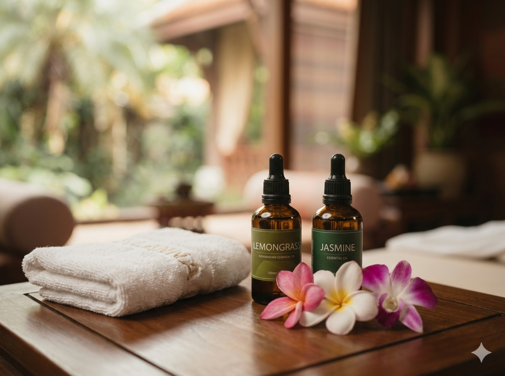

Il massaggio rilassante con oli e aromaterapia unisce manualità fluide all'uso di oli vettore e fragranze selezionate in base alle preferenze personali. L'esperienza è pensata per favorire una pausa distensiva: le sensazioni e le associazioni legate agli aromi sono soggettive.
| Durata | 3 sedute | 6 sedute |
|---|---|---|
| 60 min | 170 €56,67 € / seduta | 325 €54,17 € / seduta |
| 90 min | 230 €76,67 € / seduta | 435 €72,50 € / seduta |
| 120 min | 285 €95 € / seduta | 540 €90 € / seduta |
Come si svolge il massaggio con oli e aromaterapia?
La seduta può alternare sfioramenti, impastamenti e frizioni, con ritmo e intensità concordati insieme. Prima di iniziare puoi indicare le tue preferenze, eventuali sensibilità e le zone da evitare.
Gli oli essenziali non si applicano puri sulla pelle: se utilizzati, vengono diluiti in un olio vettore vegetale, scelto e concordato prima del trattamento.
Oli essenziali e personalizzazione della seduta
La miscela viene personalizzata considerando le fragranze gradite e le informazioni condivise prima della seduta. Tra gli oli vettore si possono trovare, in base alla disponibilità, mandorle dolci, jojoba o sesamo.

Aromi floreali e distensivi per il relax
- Lavanda: una fragranza erbacea e floreale, spesso scelta per accompagnare una pausa rilassante.
- Camomilla romana: una nota morbida, da valutare in base alle preferenze e alla sensibilità individuale.
Aromi freschi e agrumati per un effetto energizzante
- Lemongrass e bergamotto: note agrumate e fresche, selezionate in base al profumo desiderato.
- Rosmarino: una fragranza aromatica e intensa, da usare solo se adatta alla persona e alla miscela scelta.
Aromi floreali e avvolgenti per un'esperienza più dolce
- Ylang-ylang e gelsomino: profumi floreali e persistenti che possono rendere l'esperienza olfattiva più personale.
Benefici dell'aromaterapia per relax e benessere
I benefici dell'aromaterapia sono legati soprattutto all'esperienza soggettiva del trattamento. Il tocco e i profumi possono accompagnare una sensazione di calma e benessere, senza sostituire cure o consigli sanitari.
- Riduzione dello stress percepito: un ambiente tranquillo e un ritmo disteso possono aiutare a ritagliarsi una pausa dalla routine.
- Distensione: le manualità concordate possono favorire una sensazione temporanea di rilassamento muscolare.
- Cura della pelle: l'olio vettore contribuisce a rendere la pelle più morbida; la scelta va adattata alle caratteristiche individuali.
- Esperienza personalizzata: profumi, intensità e manualità vengono concordati prima e durante la seduta.
Controindicazioni e precauzioni del trattamento
Gli oli essenziali sono concentrati e "naturale" non significa automaticamente adatto a tutti. La scelta, la diluizione e la modalità d'uso vanno concordate prima del trattamento; non applicare oli essenziali puri sulla pelle né ingerirli.
Gravidanza e allattamento: informazioni importanti
Informa la professionista prima della seduta. In gravidanza o durante l'allattamento, usa oli essenziali solo dopo aver verificato con il medico o l'ostetrica che siano adatti alla tua situazione. Se necessario, si può valutare un olio vettore senza essenze, tenendo conto anche di eventuali allergie.
Allergie, asma e sensibilità cutanea
Segnala allergie note, asma, dermatiti e reazioni avute in passato a profumi o cosmetici. Alcuni prodotti possono irritare la pelle o risultare fastidiosi per le vie respiratorie. Un eventuale test cutaneo va effettuato secondo le indicazioni del prodotto o di un professionista e non esclude ogni possibile reazione.
Patologie, epilessia e farmaci: verifica prima della seduta
Se hai epilessia, una patologia cronica o assumi farmaci, chiedi al medico se gli oli previsti sono compatibili con la tua situazione e informa la professionista prima di scegliere la miscela. Le precauzioni variano in base all'olio e alla persona; non modificare terapie prescritte per fare il trattamento.
Oli agrumati e fotosensibilità
Alcuni oli di agrumi, in particolare certe formulazioni di bergamotto, limone e arancio amaro, possono aumentare la sensibilità della pelle ai raggi UV. Il rischio dipende dal tipo di estratto e dal prodotto: segui le indicazioni specifiche e chiedi se è opportuno evitare sole e lampade UV sulla zona trattata. Non esiste un intervallo unico valido per tutti gli oli.
Prima della seduta: informazioni utili
Condividi con la professionista eventuali condizioni di salute, gravidanza o allattamento, allergie e sensibilità. Il massaggio è un trattamento di benessere e non sostituisce il parere di un professionista sanitario. Contattaci per confermare sede e disponibilità.